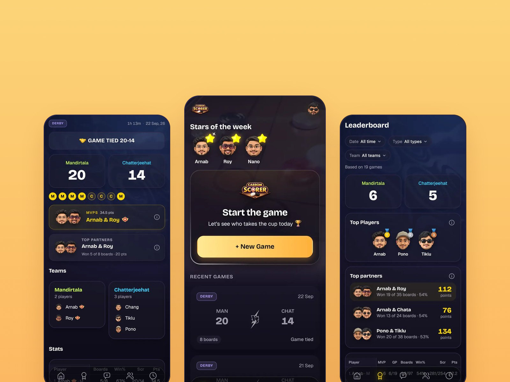
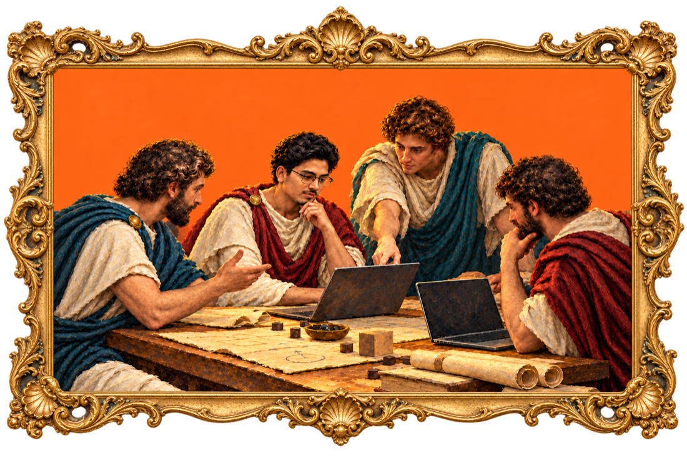
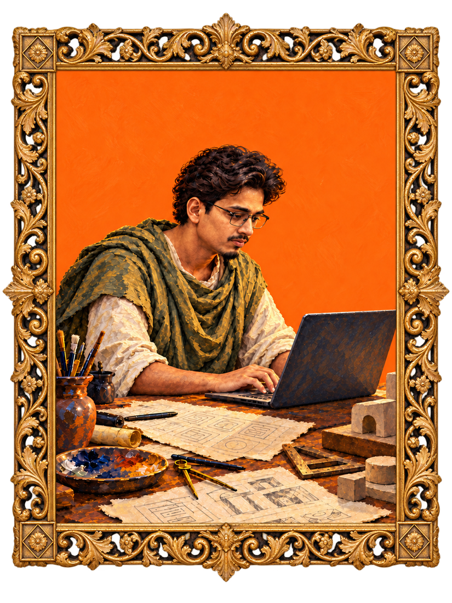
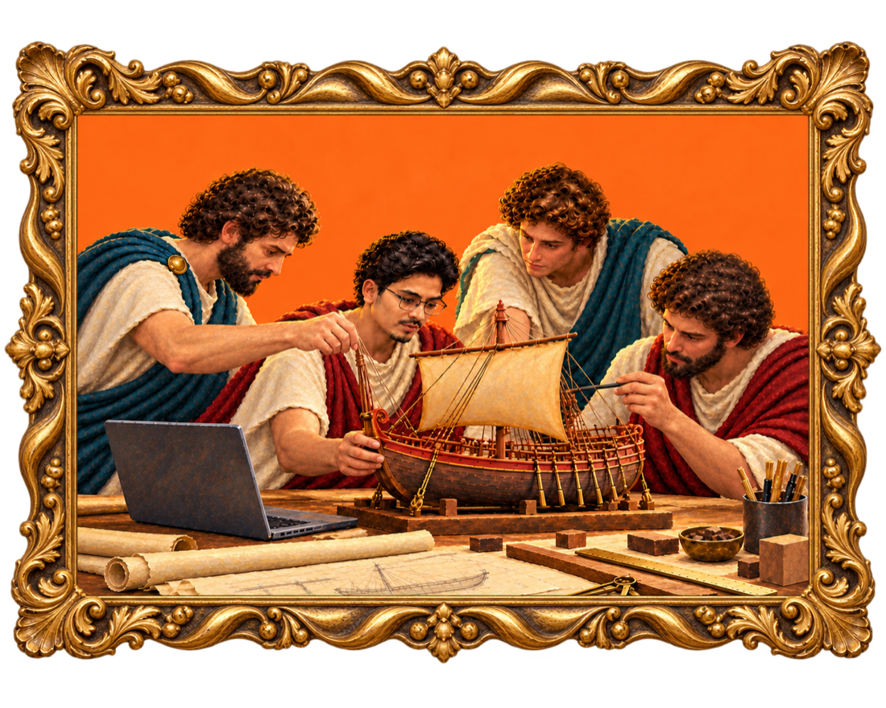
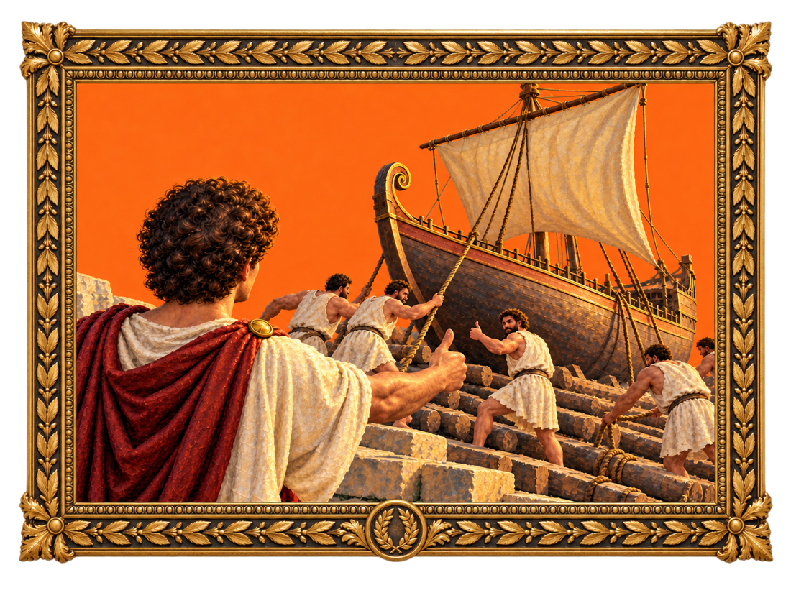

6 years designing SaaS applications and AI products for enterprises. Presently working at LeewayHertz, A Hackett Group Company.


Made to ship
Products I’ve taken from problem to launch, owning every step on the way.

ZBrain Admin Console
Where an organisation runs the platform: spaces, users, models, connectors, API keys, deployments and spend. Governance is its key feature.


CE CoPilot
An AI troubleshooting assistant for customer engineers at a global semiconductor equipment maker, across a mobile app, a web app and an admin console.

ZBrain design system
The Figma design system turned into an AI-ready Markdown guide, so visual exploration and prototyping come out consistent across prompts.

DHS Tutor
An NBDHE study app whose tutor answers only from the DHS Review Book, on a flat design system built to replace a vendor restyle.
On the side

Live radio from every country on a world map
uniwave puts thousands of stations on a lit map and asks one thing: where do you want to listen?

Building a carrom scoring app
Carrom Scorer settles every game in the open: live scores, a leaderboard, and an AI helper that can’t make up a number.

A money app that tells you where you stand
Finora answers one question before anything else: am I doing okay? Only then does it show you the numbers behind it.
Problem to product
-

01Understand the problem
Learn how the product and its people really work, the workflows, rules and edge cases, before drawing a single screen.
-

02Research & ideate
Dig into how the domain works and how others have solved it, then sketch lots of directions before settling on the one worth building.
-

03Design, prototype, test & refine
Shape the flows in Figma, prototype them with AI, and put them in front of the team and real users early, refining every state until the right choice feels obvious.
-

04Build & ship
Hand over every state the build needs, check it in code, and stay with it through release and what comes after.
What they say
Notes from the product and engineering partners I work with at LeewayHertz.
There’s a stubbornness to how he works. He stays with a problem long after most of us would have shipped something, and it’s why his flows survive review.
What I notice from the delivery side is that nothing comes back. Screens go out, and the questions I’d normally be fielding two weeks later simply don’t arrive.
My team used to lose the first sprint decoding designs. Now we open the file and start building. The states are there, the empty cases are there, and nobody has to guess.
Rare to find a designer who asks what the API can actually return before drawing the screen. We’ve had far fewer of those conversations where the design is lovely and the system can’t support it.
Being listened to properly is rarer than it should be. Half the requirements I wrote last year got sharper after a conversation with him, usually because he’d asked something I hadn’t.
About
With a foundation in engineering, I bring problem-solving, systems thinking, and analytical skills into the world of product design. My approach blends technical precision with creativity to craft solutions that are functional, intuitive, and user-centered. My goal is to design products that not only work seamlessly but also create meaningful experiences.
Core skills
- Product thinking
- Product strategy, prioritisation, roadmapping
- Research & discovery
- User interviews, competitive analysis, usability testing
- Experience design
- Information architecture, user flows, interaction design, wireframing
- Design craft
- UI design, design systems, prototyping, responsive design
- Execution
- Accessibility (WCAG), design handoff, cross-functional collaboration, AI-assisted design
Recognitions
- 2023
- Awarded Best Performer, Design Team, LeewayHertz
- 2022
- Awarded Best Performer, Design Team, LeewayHertz